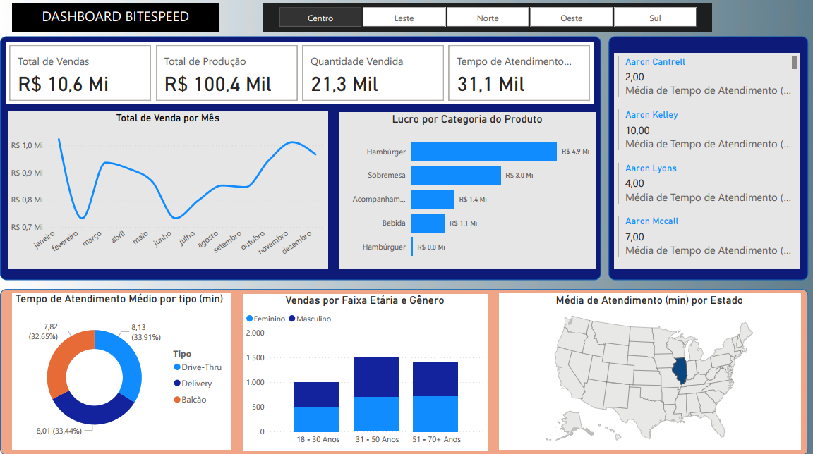
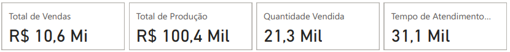
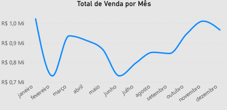
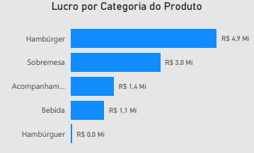
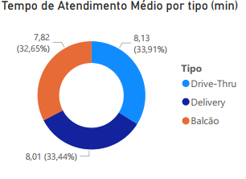
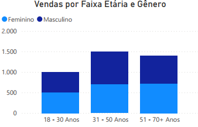

Projeto: Dashboard BiteSpeed - Análise de Performance Operacional e de Vendas
Introdução
Este projeto apresenta um Dashboard desenvolvido para a empresa fictícia BiteSpeed, com o objetivo primordial de fornecer uma visão consolidada e acionável sobre as operações de vendas e o desempenho do serviço de atendimento ao cliente. A solução foi projetada para permitir que gestores e equipes operacionais monitorem métricas chave de vendas, produção e, crucialmente, o tempo médio de atendimento em diferentes canais e regiões. Ao integrar dados de vendas, atendimento e demografia do cliente, o painel capacita a empresa a identificar gargalos, otimizar processos, aprimorar a experiência do cliente e direcionar campanhas de marketing de forma mais eficaz.
Estrutura do Projeto
Os principais requisitos e indicadores desenvolvidos para esta análise, visando uma gestão mais eficiente do negócio, foram:
- Performance Financeira e Operacional Global: Total de Vendas, Total de Produção e Quantidade Vendida, oferecendo um panorama macro do volume de negócios da empresa.
- Desempenho Regional: Análise das vendas e outras métricas por regiões geográficas (Centro, Leste, Norte, Oeste, Sul).
- Tempo de Atendimento ao Cliente: Monitoramento da média de tempo de atendimento, detalhado por tipo de serviço (Drive-Thru, Delivery, Balcão), por gênero do cliente e, de forma granular, por colaboradores específicos.
- Análise Geográfica do Atendimento: Visualização da média de tempo de atendimento por estado, destacando áreas que requerem atenção ou que performam excepcionalmente bem.
- Composição de Vendas por Produto: Detalhamento das vendas totais por categoria de produto (Hambúrguer, Sobremesa, Bebida, Acompanhamento).
- Lucratividade por Categoria: Apuração do lucro gerado por cada categoria de produto, permitindo decisões estratégicas sobre o mix de produtos.
- Tendência de Vendas ao Longo do Tempo: Gráfico da evolução das vendas totais ao longo dos meses do ano, para identificar sazonalidades e padrões de consumo.
- Demografia de Vendas: Análise da distribuição das vendas por faixa etária e gênero, oferecendo insights valiosos para campanhas de marketing e segmentação de público.
Tecnologias Utilizadas
Para a construção deste dashboard analítico, as ferramentas empregadas foram:
Power BI Desktop: Para conectar as fontes de dados, realizar a modelagem e transformação necessárias, e desenvolver os visuais interativos que compõem o dashboard.
Figma: A prototipação e o design do dashboard foram feitos com o Figma
Processo de ETL (Extração, Transformação e Carregamento)
O processo de ETL para o Dashboard BiteSpeed foi cuidadosamente planejado para garantir a qualidade e a integridade dos dados:
- Extração: Os dados foram obtidos de suas fontes operacionais, que em um ambiente de quick-service incluiriam sistemas de Ponto de Venda (PDV) para vendas, sistemas de gerenciamento de pedidos para tempos de atendimento, sistemas de RH para dados de colaboradores. Os dados foram fornecidos em
.xlse.csv, contendo informações detalhadas sobre transações, produtos, horários de atendimento e dados demográficos dos clientes. - Transformação: No Power Query, parte integrante do Power BI, foram realizadas diversas operações de limpeza e enriquecimento. Isso incluiu:
- Padronização de nomes de regiões e categorias de produto.
- Tratamento de dados temporais para permitir análises por mês.
A modelagem de dados foi fundamental para estabelecer relacionamentos entre as tabelas fato e dimensão, assegurando que todas as informações pudessem ser corretamente filtradas e visualizadas em conjunto.
- Carregamento: Após as etapas de extração e transformação, os dados foram carregados no modelo de dados do Power BI, estando prontos para alimentar todos os gráficos e tabelas do dashboard, permitindo a exploração interativa.
Dashboard
O dashboard apresenta-se com um layout organizado para fornecer uma visão clara dos principais indicadores em um único olhar. A interface utiliza uma combinação de cartões de KPI para os totais gerais, gráficos de barras para comparações (por produto, categoria), gráficos de rosca para proporções (tempo de atendimento por tipo/gênero) e um mapa de calor para a análise geográfica do tempo de atendimento. A interatividade é um diferencial, permitindo que os usuários filtrem os dados por região, período ou até mesmo por colaborador, facilitando a exploração de insights específicos e a identificação de áreas de melhoria.

Insights
A análise dos dados apresentados no Dashboard revelou insights valiosos sobre a performance operacional e comercial da empresa:
- Visão Financeira e Operacional Consolidada:
- No panorama geral, o dashboard destaca importantes indicadores: um Total de Vendas de R$ 10,6 Milhões, uma Quantidade Vendida de R$ 21,3 Mil itens e um Total de Produção de R$ 100,4 Mil unidades. Essas métricas oferecem uma base sólida para entender a escala das operações da empresa.

- Tendência de Vendas por Mês:
- O gráfico “Total de Venda por Mês” mostra a progressão das vendas ao longo do ano (de janeiro a dezembro). A linha de tendência permite identificar padrões sazonais ou o impacto de campanhas específicas. Para um negócio, essa visualização é fundamental para planejar estoques, alocação de pessoal e estratégias de marketing futuras.

- Performance de Vendas e Lucro por Categoria de Produto:
- A categoria Hambúrguer se destaca significativamente nas vendas com R$ 4,9 Milhões, Sobremesa contribui com R$ 3,0 Milhões em vendas, Bebida com R$ 1,4 Milhão e Acompanhamento com R$ 1,4 Milhão.
Este insight é vital para a otimização do mix de produtos e estratégias de rentabilidade.

- Análise Detalhada do Tempo de Atendimento:
- O dashboard oferece uma visão multifacetada do tempo de atendimento médio, crucial para a satisfação do cliente.
- Por Tipo de atendimento: O tempo médio de atendimento é de 7,82 minutos para o Balcão (representando 32,65% do tempo total de atendimento) e 8,13 minutos para o Drive-Thru (33,91%).
- O Delivery registra uma média de 8,01 minutos (33,44% do tempo total de atendimento).
A identificação dessas médias permite que a empresa invista em treinamento específico ou melhorias de processo para os canais e públicos que apresentam tempos de atendimento mais longos.

- Desempenho Individual no Atendimento:
- Além das médias gerais, o painel permite acompanhar o tempo de atendimento de colaboradores específicos: Aaron Kelley (10 min), Aaron Lyons (4 min) e Aaron Mccall (7 min). Essa granularidade é extremamente útil para identificar funcionários de alta performance que podem servir de exemplo, e para oferecer suporte ou treinamento adicional àqueles que precisam otimizar seu tempo de serviço.
- Vendas por Faixa Etária e Gênero:
- Os gráficos de barras para “Vendas por Faixa Etária e Gênero” são essenciais para entender o perfil do consumidor. Eles mostram a distribuição de vendas por grupos de idade (18-30 Anos, 31-50 Anos, 51-70+ Anos) e segregam essa informação por gênero (feminino e masculino, inferido pelas duas barras distintas para cada faixa etária).
- Observa-se que as vendas são significativas em todas as faixas etárias, mas com volumes distintos em cada uma. Destaca-se que a faixa etária de 31-50 e 51-70+ anos estão a frente da faixa etária mais jovem de 18-30 anos, além de poder observar um equilibrio claro entre os gêneros.
Esses insights demográficos são imposrtantes para a equipe de marketing, permitindo a criação de campanhas direcionadas, promoções específicas para certos grupos ou até mesmo o desenvolvimento de produtos que atendam melhor às preferências de diferentes segmentos de clientes.

Considerações
O Dashboard ofereceu uma série de oportunidades para otimização e crescimento. A partir dos insights obtidos, algumas considerações importantes surgem:
- Otimização do Atendimento ao Cliente: A análise detalhada dos tempos de atendimento por tipo (Drive-Thru, Delivery, Balcão) e por estado é crucial. A empresa pode implementar treinamentos específicos, reorganizar equipes ou investir em tecnologia para reduzir esses tempos, impactando diretamente a satisfação do cliente e a capacidade de servir mais consumidores.
- Estratégias de Produto e Rentabilidade: A concentração de lucro na categoria de hambúrgueres exige atenção. É vital investigar por que outras categorias não mostram lucro aparente e explorar formas de otimizar suas margens, seja através de renegociação com fornecedores, otimização de processos de produção ou ajustes de preço. O dashboard sugere a necessidade de uma análise mais aprofundada de custos e precificação em outras categorias.
- Marketing Orientado por Dados: A segmentação das vendas por faixa etária e gênero permite que a equipe de marketing crie campanhas altamente personalizadas. Por exemplo, se a faixa etária “18-30 Anos” demonstra ser um segmento forte, a empresa pode direcionar publicidade em plataformas sociais populares entre esse público.
- Gestão de Desempenho de Colaboradores: O acompanhamento individual do tempo de atendimento de colaboradores como Aaron Kelley, Lyons e Mccall, é uma ferramenta poderosa para a gestão de performance. Isso permite identificar necessidades de treinamento, reconhecer e recompensar a eficiência, e promover um ambiente de trabalho focado na melhoria contínua do serviço.
- Expansão e Otimização Regional: O mapa de tempo de atendimento por estado pode guiar futuras decisões de expansão ou a necessidade de intervenções em filiais de estados com desempenho inferior.
Conclusão
O Dashboard foi uma ferramenta analítica essencial que transforma dados operacionais e de vendas em inteligência acionável. Sua principal contribuição reside na capacidade de:
- Fornecer um panorama financeiro e operacional abrangente, facilitando o acompanhamento das metas de vendas e produção.
- Detalhar a performance do serviço de atendimento ao cliente por diversos ângulos (canal, gênero, indivíduo, localização), permitindo intervenções cirúrgicas para melhoria.
- Oferecer insights demográficos profundos sobre os clientes, subsidiando estratégias de marketing e desenvolvimento de produtos.
- Identificar oportunidades para otimizar o mix de produtos e a lucratividade das categorias.
Este projeto demonstra a habilidade em construir soluções de BI que capacitam empresas a entenderem profundamente suas operações, aprimorarem a experiência do cliente e tomarem decisões estratégicas baseadas em dados, impulsionando o crescimento e a eficiência em um mercado competitivo como o de quick-service.